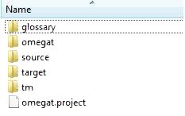

Datoteke in imeniki OmegaT
OmegaT dela s tremi vrstami datotek.
- Datoteke za prevodni projekt: Te datoteke sestavljajo prevodni projekt. Njih izguba lahko ogrozi celovitost projekta in uspešen zaključek vašega projekta. V OmegaT predstavljajo projektne datoteke najbolj pomemben del. To so datoteke, s katerimi imate opravka med vsakodnevnim prevajanjem.
- Datoteke za uporabniške nastavitve: Program jih ustvari, če se spremeni nastavitve za program in s tem vedenje OmegaT. Če jih zgubite, bo OmegaT nastavitve povrnil na "tovarniške" vrednosti. Če se vam to pripeti, ko je projekt napol končan, boste morebiti imeli nekaj težav.
- Datoteke aplikacije: Gre za datoteke, ki ste jih posneli z instalacijo programa, večino jih potrebujete za to, da OmegaT pravilno deluje. Če se jih iz kakršnegakoli razloga izgubi, je samo treba ponovno posneti OmegaT in/ali program ponovno namestiti.
Datoteke za prevodni projekt
Prevodni projekt v OmegaT sestavlja več datotek in imenikov.
Mesto za datoteke za prevodni projekt
Ko odprete nov prevodni projekt, bo OmegaT samodejno ustvaril več podimenikov, ki bodo kasneje služili kot odlagališče za datoteke, poleg tega pa več datotek, v katerih se bodo nahajale vaše nastavitve in vaš prevodni spomin za projekt. Imenike za prevodni projekt bo OmegaT odprl pod glavnim imenikom za projekt. Ko odpirate - bodisi nov ali pa že obstoječ - projekt, si lahko si tudi izberete druga mesta za te imenike. Tako je vam samim prepuščeno, ali boste uporabili imenike, ki že obstajajo, ali pa jih boste odprli na mestih, ki ustrezajo vašemu načinu dela. Če želite mesto vaših imenikov spremeniti zatem, ko ste ga ustvarili, odprite Projekt → Lastnosti ... in spremenite nastavitve, kot vam odgovarja.
Seznam datotek za prevodni projekt
V dvogovoru za datoteke, ki ga OmegaT odpre, bo prevodni projekt ime videz datoteke, označene z ikono OmegaT. V brskalniku pa bo prevodni projekt videti tako kot vsak drug imenik.

Da projekt odprete, zadošča, če izberete predmet z ikono OmegaT. Prevodni projekt z imenom Example_Project se bo ustvaril s prednastavljenimi vrednostmi, kot novo podmapo z naslednjo strukturo:

.Podimenika glossary in glossary bosta ob začetku projekta prazna. To je mesto za vaše slovarje in geslovnike, če jih nameravate uporabljati v svojem projektu.OmegaT
- Podimenik omegat bo vseboval vsaj dvoje datotek, to je datoteko sprevodnim spominom project_save.tmx (...) in datoteko project_stats.txt (...), ki vsebuje statistične podatke o projektu. Datoteka project_save.tmx je delovni prevodni spomin za projekt. Če ste aktivirali funkcijo autosave, se bo datoteka s prevodnim spominom samodejno ažurirala, ko prekinete delo s projektom. S tem prevodnim spominom se ustvarja datoteke v ciljnem jeziku. Sčasoma se bo v ta podimenik dodajalo datoteke TMX z imeni oblike project_save.tmx.<datum in ura>.bak (...). Njih namen je zaščita projektnega spomina, obnovijo pa se vsakič, ko ponovno odprete projekt, tako da prikazujejo stanje TM, preden je prišlo do kasnejših sprememb.
- Datoteka stats.txt vsebuje statistiko projekta in jo lahko odprete v programu za preglednice, da vidite podatke o številu segmentov in besed. Na razpolago boste imeli dodatne podatke, ki jih v oknu za projektne datoteke ni mogoče vseh prikazati.
Datoteki ignored_words.txt in learned_words.txt sta rezervirani za uporabo v črkovalniku OmegaT.
Source
- Mapa Source je mesto, kjer se nahajajo datoteke, ki jih je treba prevesti. Navedete lahko katerokoli mapo, poleg tega ji lahko kasneje po želji dodajate nove datoteke. Pomnite, da je struktura izvornega podimenika popolnoma vaša stvar. Če se datoteke, ki jih želite prevesti, nahajajo v drevesu s podrejenimi podimeniki, zadostuje, da za izvorni imenik navedete vrh tega drevesa - OmegaT bo drevo kopiral v celoti, ne da bi pri tem strukturo drevesa spreminjal.
Target
- Če v odprtem projektu kliknete na Projekt → Ustvari prevedene dokumente , se bo vse datoteke v sklopu /source na tem mestu ponovno ustvarilo in, v kolikor je prevod že opravljen, prevedlo, in sicer z enako hierarhično strukturo kot pod /source. Z drugo besedo, OmegaT združi podatke o prevodih, ki se nahajajo v datoteki omegat/project_save.tmx, z izvornimi dokumenti in tako ustvari vsebino target/.
Tm
- Prevodne spomine iz predhodnih projektov lahko namestite v ta podimenik. Biti morajo v formatu tmx. Za preoblikovanje iz drugih oblik uporabljajte orodja, ki so na razpolago. Pomnite, da je prevodni spomin, ki posreduje med vašim izvornim besedilom in končnim prevodom, spravljen v datoteki project_save.tmx. Priročne datoteke TM pa so na razpolago, zato da v njih program lahko išče za najbolj primernim predlogom za segmente, ki še niso prevedeni.
omegat.project
- Ko uporabnik odpre nov projekt, OmegaT samodejno ustvari to datoteko. Vsebuje parametre projekta. Parametre, ki se nahajajo v tej datoteki, lahko spreminjate v okna za lastnosti projekta.
- project_name-omegat.tmx (...)
project_name-level1.tmx
ime_projekta-level2.tmx
- Te datoteke vsebujejo segmente v izvornem in ciljnem jeziku, ki ustrezajo vsebini podimenika /source/ ob času njihovega nastanka (običajno takrat, ko se ustvarja prevedene datoteke).
Datoteke uporabnika
Mesto za uporabnikove datoteke
Uporabnikove datoteke se nahajajo na ločenem mestu, kjer so dostopne za vse verzije OmegaT. Kje se bodo nahajale, je odvisno od platforme, ki jo uporabljate:
|
Windows
|
- 2000 in XP: Documents and Settings\<User Name>\Application Data\OmegaT
- Vista: Users\<User
Name>\AppData\Roaming\OmegaT
- Drugi: <Nekaj>\OmegaT (<Nekaj>ustreza "domačemu" imeniku, kot ga Java zve od operacijskega sistema.)
|
- Linux/Solaris/FreeBSD
|
- <User Home>/.omegat (.omegat je imenik, zaradi pike pred imenom je neviden, razen če ne uporabite
ls -a ali kakega podobnega ukaza.)
|
- Mac OS X
|
- <User
Home>/Library/Preferences/OmegaT
|
- Drugo
|
- <User Home>
|
Seznam uporabnikovih datotek
- log.txt
|
- V to datoteko shranjuje Java napake, do katerih pride med uporabo OmegaT. Če imate občutek, da se OmegaT čudno vede, je pomembno, da pošljete sporočilo o problemih in da sporočilu dodate tudi to datoteko oziroma tisti del v njej, ki se problema tiče.
|
- omegat.prefs
|
- XML datoteka, ki vsebuje vse nastavitve za uporabniški vmesnik in pa podatke o položaju in velikosti odprtih oken.
|
- filters.conf
|
- XML datoteka z nastavitvami filtrov za datoteke.
|
- segmentation.conf
|
- XML datoteka s podatki o nastavitvah za stavčno segmentacijo.
|
Datoteke aplikacije
OmegaT je na razpolago kot paket, ki ga lahko naložite s SourceForge. V tem poglavju si bomo ogledali od platforme neodvisni paket, ki vsebuje aplikacijo v obliki, ki je za Javo standardna. Ostali paketi vsebujejo Linux .tar paket, nameščevalnik za Windows -z ali brez Java Runtime Environment -, nameščevalnik za Mac OS X in paket z izvorno kodo za razvijalce. Ta paket lahko uporabljate na katerikoli platformi, na kateri teče okolje JRE (Java Runtime Environment) 1.5, med drugimi tudi na platformah, za katere je paket že na razpolago. Od platforme neodvisni paket je na razpolago kot komprimirana datoteka, ki jo morate najprej razširiti v imenik za namestitev. Za razširjanje v večini primerov zadostuje dvoklik za naloženi paket. Med razširjanjem bo nastala mapa, ki vsebuje datoteke za OmegaT:
|
Datoteka/
podimenik
|
vsebina
|
| /docs/ |
- V tej mapi se nahajajo vse datoteke za dokumentacijo. Za dostop do zunanjih povezav jih odpirajte v brskalniku.
|
- /images/
|
- vsebuje ikone in logo grafiko.
|
- /lib/
|
- vsebuje datoteke za Javo. Te datoteke so potrebne za delo OmegaT.
|
- join.html
|
- Gre za običajno datoteko html, ki vas bo, če jo odprete v brskalniku, napotila na uporabniško skupino za OmegaT, ki jo gosti Yahoo Groups. Tudi če se v uporabniško skupino ne boste včlanili, dobite tako dostop do dodatnih informacij in vpogled v diskusije o aplikaciji. Arhivi skupine so javni, da po njih lahko iščete, se vam v skupino ni treba včlaniti.
|
- changes.txt
|
- Relativno natančen seznam sprememb med trenutno in prejšnjimi verzijami aplikacije.
|
- license.txt
|
- The GNU GENERAL PUBLIC LICENSE. Ta licenca vam dovoljuje določene stvari z OmegaT, med drugim spreminjanje in razširjanje. V kolikor bi želeli OmegaT spreminjati ali razširjati, si dobro oglejte ta dokument, preden se česarkoli lotite, tako da boste zagotovo vedeli, kakšne so lahko posledice. V kolikor niste čisto na jasnem, se ne obotavljajte neposredno vprašati člane projekta, bodisi s pomočjo E-pošte na strani v Source Page ali prek javnega sporočila v uporabniški skupini.
|
- doc-license.txt
|
- The GNU GENERAL PUBLIC LICENSE. Ta licenca se tiče dokumentacije. Glejte zgoraj.
|
- readme.txt
|
- Ta datoteka je zelo pomembna in zagotovo jo preberite, preden začnete delati z OmegaT. Vsebuje splošne informacije o OmegaT, kje lahko dobite dodatne informacije, kako lahko sodelujete itd. Datoteka je prevedena v številne jezike.
|
- OmegaT
|
- Besedilna datoteka z dvema vrsticama:
#!/bin/bash
java -jar OmegaT.jar $*
Datoteka vam je lahko koristna, če je spremenite v izvajalno obliko z (chmod +x OmegaT) v ukazni vrstici, pri čemer se morate nahajati v mapi OmegaT_2.0/. Odslej lahko OmegaT zaženete z ukazne vrstice s klicem te datoteke.
|
- OmegaT.bat
|
- Datoteka, s katero se pod Windows OmegaT zažene s ukazne vrstice. Vsebuje samo naslednjo vrstico:
java -jar OmegaT.jar %*
|
- OmegaT.jar
|
- Glavna aplikacija OmegaT. Če hočete zagnati OmegaT, morate ali poklicati to datoteko z ukazne vrstice ali pa jo pognati s skrbnikom za datoteko (dvoklik običajno zadošča).
|